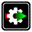

<mat-toolbar color="primary">
  
  <a class="title" href="/">{{title}}</a>
  <span class="flex-spacer"></span>
  <a mat-stroked-button class="link" href="/custom-plugins"><mat-icon>extension</mat-icon> Plugins</a>
</mat-toolbar>

<router-outlet></router-outlet>
